Outils de cartographie pour la recherche - cartography
T. Giraud
18 juin 2019 INED - Visualisation de données : Grammaire, pratiques, outils - Les rencontres de statistique appliquée
La recherche reproductible
La recherche reproductible
Les sciences se reposent sur le principe de reproductibilité.
La reproductibilité est un élément permettant d’évaluer la validité des résultats.
Le spectre de la reproductibilité
 Peng, 2011
Peng, 2011
Accompagner les publications scientifiques des jeux de données et codes sources pour permettre aux collègues de reproduire les résultats.
Cartographie reproductible ?
Les cartes, comme les autres productions graphiques ou statistiques sont des éléments à parts entières des études scientifiques.

Cartographie reproductible ?

La grande majorité des cartes produites dans un contexte académique sont issues de processus complexes. Elles sont donc souvent produites en utilisant une grande variété de logiciels et de formats.
Cartographie reproductible ?

Cette variété de formats et de logiciels rend difficile la reproduction des cartes.
Cartographie reproductible !
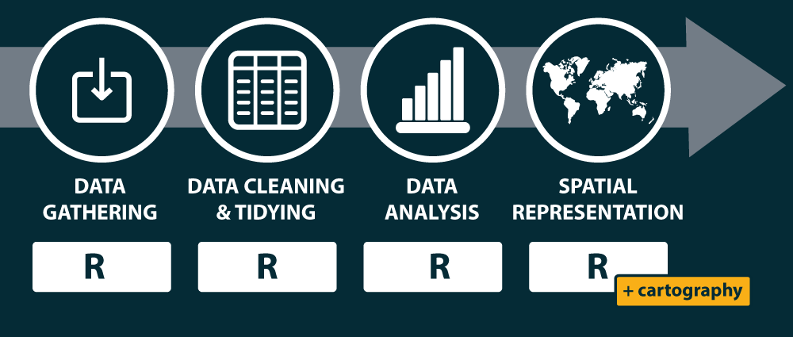 Simplifier les chaines de traitement pour couvrir les différentes étapes de la construction cartographique.

R
R est un langage et un environnement permettant de réaliser une variété de traitements statistiques et de représentations graphiques.
R est un logiciel libre sous license GNU General Public License.
R est multiplateforme (GNU/Linux, Windows, OS X…).
Un jeu d’outils et de technologies
Un large ecosystème d’extensions créées par les contributeurs (les fameux packages).
Un environnement de développement intégré (l’IDE RStudio).
- Des solutions de literate programming, tel que le Markdown et le RMardown.
> Literate programming : Une explication de la logique du programme en langage naturel, entremêlée de morceaux de code source. Des logiciels de gestion de version (git et svn).
Le package sf
Une interface entre R et plusieurs librairies géographiques :
Le package sf
Format des objets spatiaux sf

Le package sf
Import de données
Reading layer `martinique' from data source `/home/tim/Documents/prz/ined2019/data/martinique.shp' using driver `ESRI Shapefile'
Simple feature collection with 34 features and 23 fields
geometry type: POLYGON
dimension: XY
bbox: xmin: 690574.4 ymin: 1592426 xmax: 736126.5 ymax: 1645660
epsg (SRID): 32620
proj4string: +proj=utm +zone=20 +datum=WGS84 +units=m +no_defsLe package sf
Affichage de données
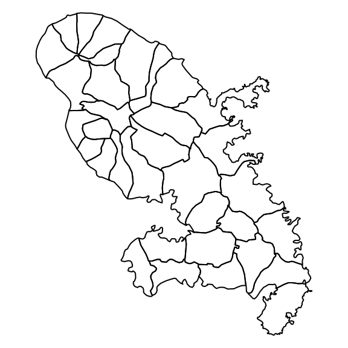
Le package sf
Extraire les centroïdes
mtq_c <- st_centroid(mtq)
plot(st_geometry(mtq))
plot(st_geometry(mtq_c), add=TRUE, cex=1.2, col="red", pch=20)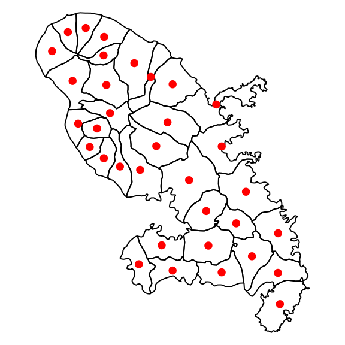
Le package sf
Construire une matrice de distances
Units: [m]
[,1] [,2] [,3] [,4] [,5]
[1,] 0.000 35297.56 3091.501 12131.617 17136.310
[2,] 35297.557 0.00 38332.602 25518.913 18605.249
[3,] 3091.501 38332.60 0.000 15094.702 20226.198
[4,] 12131.617 25518.91 15094.702 0.000 7177.011
[5,] 17136.310 18605.25 20226.198 7177.011 0.000Le package sf
Agréger des polygones
mtq_u <- st_union(mtq)
plot(st_geometry(mtq), col="lightblue")
plot(st_geometry(mtq_u), add=T, lwd=2, border = "red")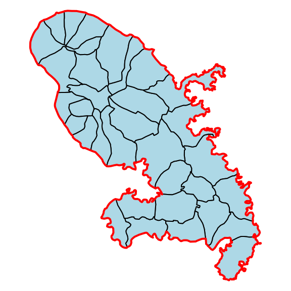
Le package sf
Construire une zone tampon
mtq_b <- st_buffer(x = mtq_u, dist = 5000)
plot(st_geometry(mtq), col="lightblue")
plot(st_geometry(mtq_u), add=T, lwd=2)
plot(st_geometry(mtq_b), add=T, lwd=2, border = "red")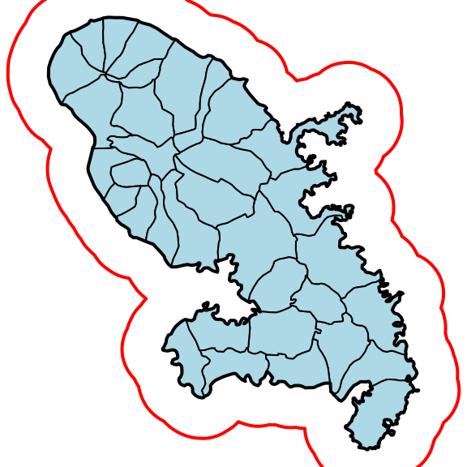
Le package sf
Réaliser une intersection
m <- rbind(c(700015,1624212), c(700015,1641586), c(719127,1641586), c(719127,1624212), c(700015,1624212))
p <- st_sf(st_sfc(st_polygon(list(m))), crs = st_crs(mtq))
plot(st_geometry(mtq))
plot(p, border="red", lwd=2, add=T)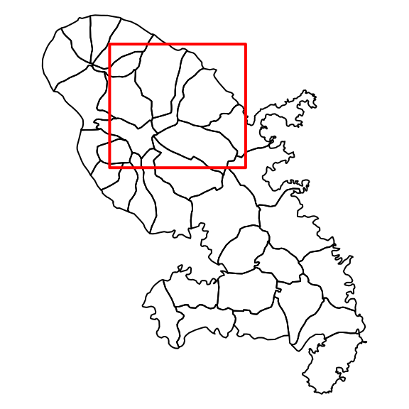
Le package sf
Réaliser une intersection
mtq_z <- st_intersection(x = mtq, y = p)
plot(st_geometry(mtq))
plot(st_geometry(mtq_z), col="red", border="green", add=T)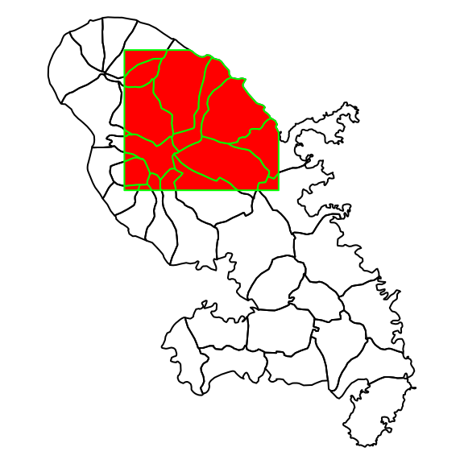
Le package sf
Construire des polygones de Voronoi
mtq_v <- st_voronoi(x = st_union(mtq_c))
mtq_v <- st_intersection(st_cast(mtq_v), st_union(mtq))
mtq_v <- st_join(x = st_sf(mtq_v), y = mtq_c, join=st_intersects)
mtq_v <- st_cast(mtq_v, "MULTIPOLYGON")
plot(st_geometry(mtq_v), col='lightblue')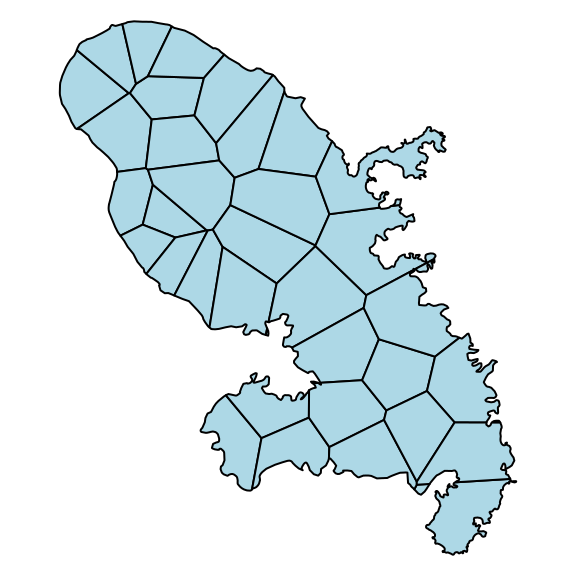
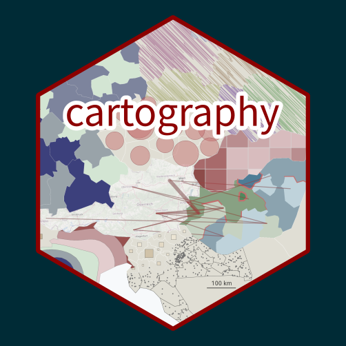
Symboles proportionnels
library(cartography)
library(sf)
# Load data
mtq <- st_read(system.file("shape/martinique.shp",
package="cartography"))
# save map
png(filename = "img/map1.png",
width = 400, height = 467, res = 100)
# ser margins
par(mar=c(0,0,0,0))
# Countries plot
plot(st_geometry(mtq), col = "lightblue4",
border = "lightblue3", bg = "lightblue1")
# Population plot on proportional symbols
propSymbolsLayer(
x = mtq,
var = "P13_POP",
legend.title.txt = "Total\npopulation (2013)"
)
# Title
mtext(text = "Population en Martinique", side = 3, line = -1)
dev.off()
# .Symboles proportionnels
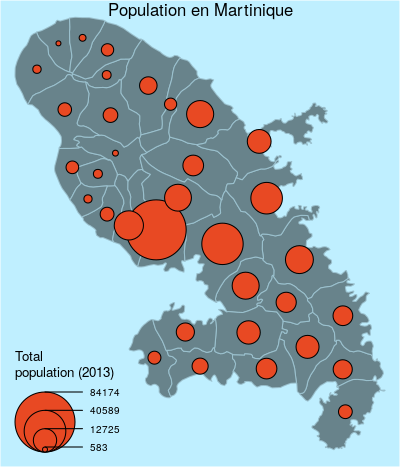
Carte choroplèthe
png(filename = "img/map2.png", width = 400, height = 467, res = 100)
# Compute the compound annual growth rate
mtq$cagr <- (((mtq$P13_POP / mtq$P08_POP)^(1/4)) - 1) * 100
# set margins
par(mar=c(0,0,0,0))
# Map plot
choroLayer(
x = mtq,
var = "cagr",
breaks = c(-6.14,-2,-1,0,1,2),
col = c("#135D89", "#4D95BA", "#96D1EA",
"#FCDACA", "#EC4E49"),
legend.title.txt = "Compound annual\ngrowth rate"
)
# Title
mtext(text = "Evolution de la population", side = 3, line = -1)
dev.off()
# .Carte choroplèthe
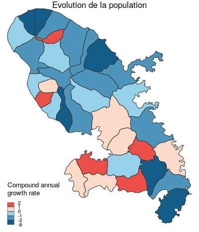
Palettes de couleurs
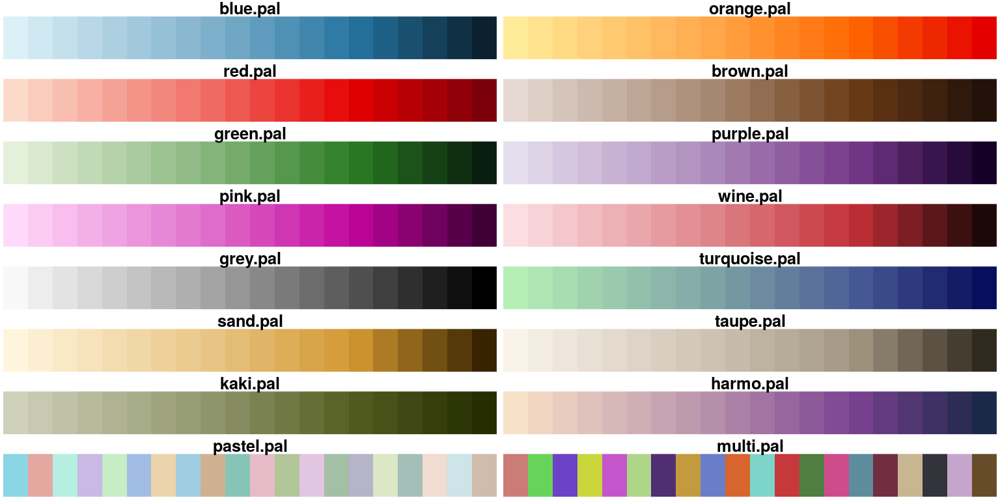
Palettes de couleurs
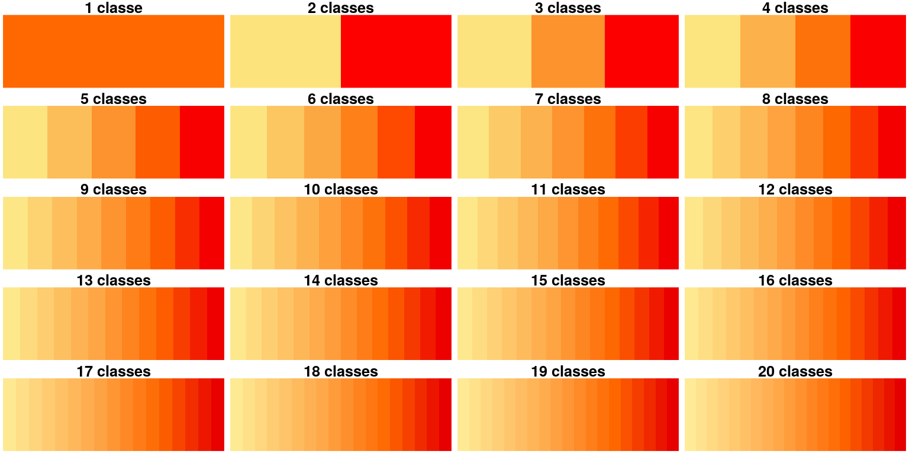
Discrétisations
var <- mtq$cagr
moy <- mean(var)
med <- median(var)
std <- sd(var)
# Quantile intervals
breaks <- getBreaks(v = var, nclass = 6, method = "quantile")
hist(var, probability = TRUE, breaks = breaks, main="quantiles",
col = carto.pal(pal1 = "wine.pal",3, "green.pal", 3))
rug(var)
abline(v = med, col = "blue", lwd = 3)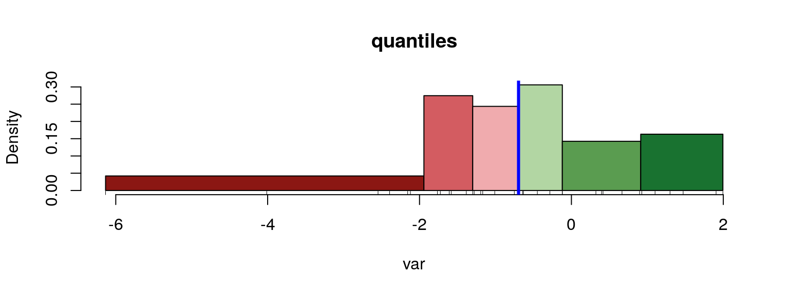
Discrétisations
# Mean and standard deviation (msd)
breaks <- getBreaks(v = var, method = "msd", k = 1, middle = TRUE)
hist(var, probability = TRUE, breaks = breaks, main="moyenne / écart-type",
col = carto.pal(pal1 = "wine.pal",3 , "green.pal", 2, middle = TRUE))
rug(var)
abline(v = moy, col = "red", lwd = 3)
abline(v = moy + 0.5 * std, col = "blue", lwd = 3)
abline(v = moy - 0.5 * std, col = "blue", lwd = 3)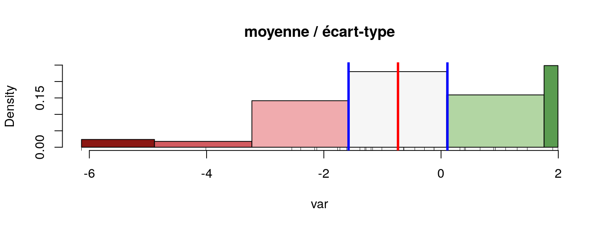
Combinaisons
png(filename = "img/map3.png", width = 400, height = 467, res = 100)
# set margins
par(mar=c(0,0,0,0))
# Map plot
# Countries plot
plot(st_geometry(mtq), col = "lightblue4",
border = "lightblue3", bg = "lightblue1")
propSymbolsChoroLayer(
x = mtq,
var = "P13_POP",
legend.var.title.txt = "Total\npopulation (2013)",
var2 = "cagr", legend.var.pos = "bottomleft",
breaks = c(-6.14,-2,-1,0,1,2),
col = c("#135D89", "#4D95BA", "#96D1EA", "#FCDACA", "#EC4E49"),
legend.var2.title.txt = "Compound annual\ngrowth rate"
)
# Title
mtext(text = "Evolution de la population", side = 3, line = -1)
dev.off()
# .Combinaisons
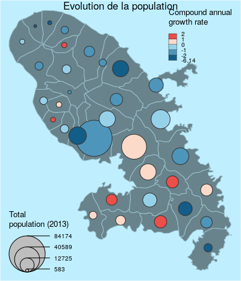
Labels
png(filename = "img/map4.png", width = 400, height = 467, res = 100)
# set margins
par(mar=c(0,0,0,0))
plot(st_geometry(mtq), col = "darkseagreen3",
border = "darkseagreen4",
bg = "#A6CAE0")
labelLayer(
x = mtq,
txt = "LIBGEO",
col = "black",
cex = 0.7,
font = 4,
halo = TRUE,
bg = "white",
r = 0.1,
overlap = FALSE,
show.lines = FALSE
)
dev.off()
# .Labels
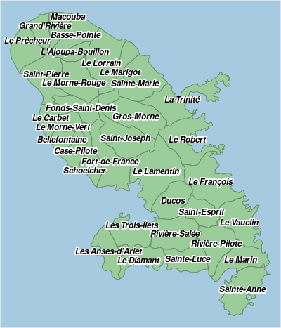
Tuiles OpenStreetMap
Tuiles OpenStreetMap
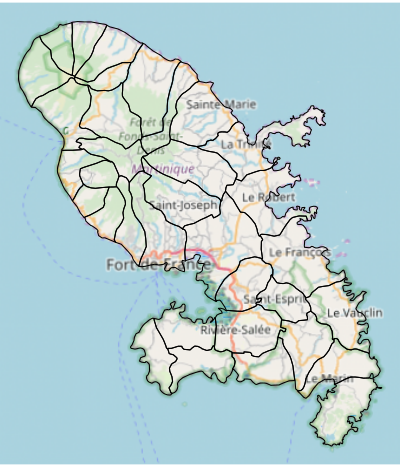
Carte carroyée
library(cartography)
data(nuts2006)
nuts3.spdf@data = nuts3.df
# Create a grid layer
mygrid <- getGridLayer(x = nuts3.spdf, cellsize = 100000 * 100000,
type = "hexagonal", var = c("pop1999","pop2008"))
# Compute the compound annual growth rate
mygrid$cagr <- (((mygrid$pop2008/mygrid$pop1999)^(1/9)) - 1) * 100
v <- getBreaks(v = mygrid$cagr, method = "quantile", nclass = 10)
v[5] <- 0
# set a color palette
cols <- c("#f18b61", "#f7b48c", "#f3d9b7", "#f1eccd",
"#c0dec2", "#91caa4", "#63b285", "#329966",
"#26734d", "#1a4c33")
# save the map in png format
png(filename = "img/map5.png", width = 600, height = 535, res = 100)
par(mar = c(0, 0, 1.2, 0))
# Plot a background layers
plot(nuts0.spdf, border = NA, col = NA, bg = "#A6CAE0")
plot(world.spdf, col = "#CCCCCC", border = NA, add = TRUE)
# plot the choropleth grid
choroLayer(x = mygrid, var = "cagr", add = TRUE,
col = cols, lwd = 0.6, border = "#FFFFFF60",
legend.pos = "right", breaks = v, legend.values.rnd = 2,
legend.title.txt = "Compound Annual\nGrowth Rate")
# plot countries boundaries
plot(nuts0.spdf, add = T, col = NA, border = "#56514c", lwd = 0.7)
# Plot a layout
layoutLayer(title = "Demographic Trends, 1999-2008",
author = "Package cartography v2.0.2",
sources = "Source: Eurostat, 2011", frame = TRUE,
scale = 500, north = TRUE, theme = "taupe.pal")
dev.off()
# .Carte carroyée
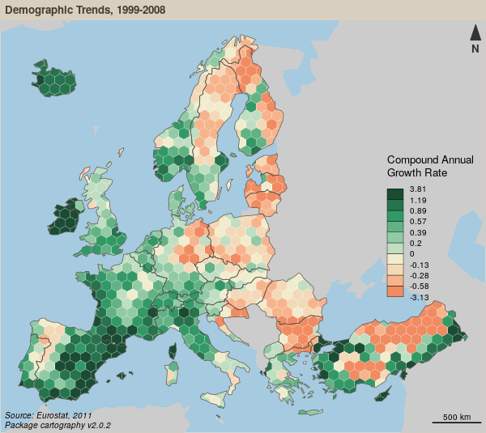
Carte de discontinuités
# Get a SpatialLinesDataFrame of countries borders
nuts2.contig <- getBorders(x = nuts2.spdf)
nuts2.df$gdpcap <- nuts2.df$gdppps2008/nuts2.df$pop2008 * 1e+06
# save the map in png format
png(filename = "img/map6.png", width = 600, height = 535, res = 100)
par(mar = c(0, 0, 1.2, 0))
# Plot a background layers
plot(nuts2.spdf, border = NA, col = NA, bg = "#A6CAE0")
plot(world.spdf, col = "#E3DEBF", border = NA, add = TRUE)
# Plot GDP per capita with a choropleth layer
choroLayer(spdf = nuts2.spdf, df = nuts2.df, var = "gdpcap",
border = "grey20", lwd = 0.2,
col = carto.pal(pal1 = "green.pal", n1 = 3, "sand.pal", 3),
method = "quantile", nclass = 6, add = TRUE,
legend.pos = "right", legend.values.rnd = -2,
legend.title.txt = "GDP per Capita\n(in euros)")
# Plot discontinuities
discLayer(x = nuts2.contig, df = nuts2.df,
var = "gdpcap", type = "rel",
method = "equal", nclass = 3, threshold = 0.4,
sizemin = 0.7, sizemax = 6, col = "red",
legend.values.rnd = 1, legend.pos = "topright", add = TRUE,
legend.title.txt =
"Discontinuities in \nGDP per Capita\n(relative)")
# Layout
layoutLayer(title = "Wealth Disparities in Europe, 2008",
author = "Package cartography v2.0.2",
sources = "Source: Eurostat, 2011", frame = TRUE,
scale = 500, north = FALSE, theme = "grey.pal")
north(pos="topleft")
dev.off()
# .Carte de discontinuités
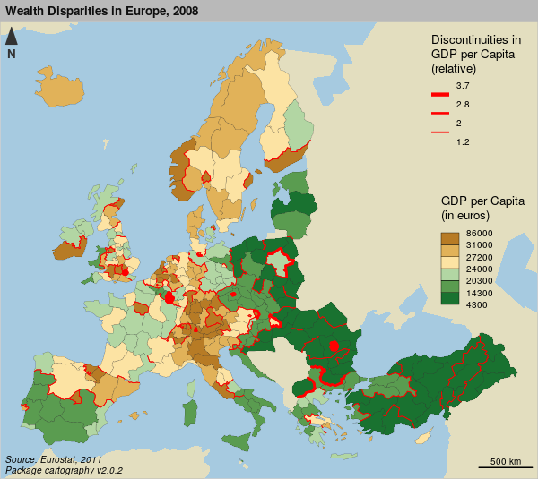
Lissage
# Create a grid layer
nuts3.spdf@data = nuts3.df
mygrid <- getGridLayer(x = nuts3.spdf, var = c("pop2008", "gdppps2008"),
cellsize = 50000 * 50000, type = "regular")
# transform gdp in euros
mygrid$gdppps2008 <- mygrid$gdppps2008 * 1e+06
# list of breaks
v <- c(2920, 5000, 10000, 15000, 20000, 23500, 30000, 35000, 40000, 42720)
# save the map to a png file
# save the map in png format
png(filename = "img/map7.png", width = 600, height = 535, res = 100)
par(mar = c(0, 0, 1.2, 0))
# Plot a background layers
plot(nuts0.spdf, border = NA, col = NA, bg = "#A6CAE0")
plot(world.spdf, col = "#E3DEBF", border = NA, add = TRUE)
# set a color palette
cols <- c(rev(carto.pal("green.pal", 5)), carto.pal("orange.pal", 4))
# compute & display the potential map
smoothLayer(x = mygrid,
var = "gdppps2008", var2 = "pop2008", breaks = v,
span = 1e+05, beta = 2, mask = nuts0.spdf,
resolution = 50000, col = cols,
legend.title.txt = "Potential\nGDP per capita\n(in euros)",
legend.values.rnd = -2,
border = "grey80", lwd = 0.5, add = T, legend.pos = "topright")
# plot Europe contour
plot(rgeos::gBuffer(nuts0.spdf, FALSE, 1), add = T, col = NA,
border = "grey50")
# plot a layout
layoutLayer(title = "Wealth Inequalities in Europe, 2008",
author = "Package cartography v2.0.2",
sources = "Source: Eurostat, 2011", frame = TRUE,
scale = 500, north = FALSE, theme = "sand.pal")
# plot a text on the map
text(x = 6271272, y = 3600000,
labels = "Distance function:\n- type = exponential\n- beta = 2\n- span = 100 km",
cex = 0.8, adj = 0, font = 3)
dev.off()
# .Lissage

Documentation

Documentation
Et aussi…


frama.link/cartography
R version 3.6.1 (2019-07-05)
Platform: x86_64-pc-linux-gnu (64-bit)
Running under: Debian GNU/Linux 9 (stretch)
Matrix products: default
BLAS: /usr/lib/libblas/libblas.so.3.7.0
LAPACK: /usr/lib/lapack/liblapack.so.3.7.0
locale:
[1] LC_CTYPE=fr_FR.UTF-8 LC_NUMERIC=C LC_TIME=fr_FR.UTF-8
[4] LC_COLLATE=fr_FR.UTF-8 LC_MONETARY=fr_FR.UTF-8 LC_MESSAGES=fr_FR.UTF-8
[7] LC_PAPER=fr_FR.UTF-8 LC_NAME=C LC_ADDRESS=C
[10] LC_TELEPHONE=C LC_MEASUREMENT=fr_FR.UTF-8 LC_IDENTIFICATION=C
attached base packages:
[1] stats graphics grDevices utils datasets methods base
other attached packages:
[1] cartography_2.2.0 sf_0.7-4 knitr_1.23
loaded via a namespace (and not attached):
[1] Rcpp_1.0.1 magrittr_1.5 units_0.6-3 tidyselect_0.2.5
[5] lattice_0.20-38 R6_2.4.0 rlang_0.3.4 stringr_1.4.0
[9] dplyr_0.8.1 tools_3.6.1 revealjs_0.9 grid_3.6.1
[13] xfun_0.7 KernSmooth_2.23-15 e1071_1.7-2 DBI_1.0.0
[17] rgeos_0.4-3 htmltools_0.3.6 class_7.3-15 yaml_2.2.0
[21] digest_0.6.19 assertthat_0.2.1 tibble_2.1.3 crayon_1.3.4
[25] purrr_0.3.2 codetools_0.2-16 glue_1.3.1 evaluate_0.14
[29] rmarkdown_1.13 sp_1.3-1 stringi_1.4.3 pillar_1.4.1
[33] compiler_3.6.1 classInt_0.3-3 pkgconfig_2.0.2